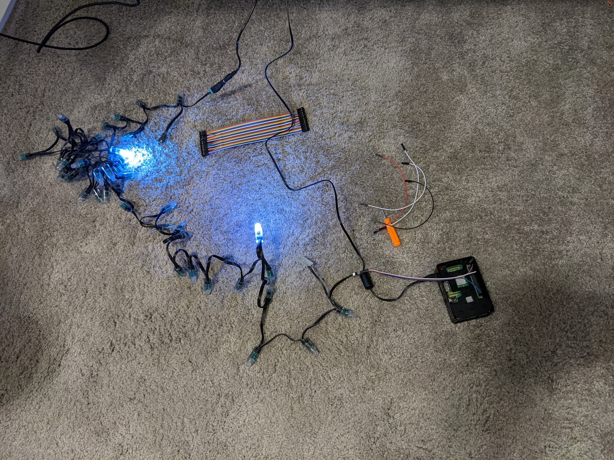

The Setup

This is where the images start but there was an intense electrical debugging session that occured before I
came close to this point, so that is what I will walk you through.
There had been some lights and a Raspberry Pi 3b hanging around my house for a while so those were the first things I got, following the video I was recommended, I tried to wire the LEDs up. The tutorial, however useful, was not helpful for my set of lights. I got the basic prinicple of how to get the adapters for the lights' wiring on but there was a lot of omitted information about what pins to use on the Raspberry Pi, or which end was negative, or which end took in data and which end outputted data. It took a bit of work, but I got the idea of how to match what pin on the Pi to to what area on the lights. I then came to the realization that the pins I needed were not magically in a row and I would need some jumper cables to carry the current between the lights and the Pi.
Fast forward 2 days and I now have the Pi wired correctly, or so I thought. I had confused the notation GPIO 18, thinking it meant PHYSICAL pin 18, it did not. After getting the wiring correct (I was able to tell by the lights flashing once when I plugged them in).
I wrote some code.
There had been some lights and a Raspberry Pi 3b hanging around my house for a while so those were the first things I got, following the video I was recommended, I tried to wire the LEDs up. The tutorial, however useful, was not helpful for my set of lights. I got the basic prinicple of how to get the adapters for the lights' wiring on but there was a lot of omitted information about what pins to use on the Raspberry Pi, or which end was negative, or which end took in data and which end outputted data. It took a bit of work, but I got the idea of how to match what pin on the Pi to to what area on the lights. I then came to the realization that the pins I needed were not magically in a row and I would need some jumper cables to carry the current between the lights and the Pi.
Fast forward 2 days and I now have the Pi wired correctly, or so I thought. I had confused the notation GPIO 18, thinking it meant PHYSICAL pin 18, it did not. After getting the wiring correct (I was able to tell by the lights flashing once when I plugged them in).
I wrote some code.
I don't have the exact code I wrote to do what is being done in the image above, but
after poking around to figure out how the Neopixel library worked, I wrote some very simple stuff. Next to
this is the first code I wrote that I have on record.
This is relatively simple compared to what you might have to endure later, and the basic idea is the I am testing the refresh rate of the lights. From this I was able to understand that 50 lights can refresh at 189 hertz. That is faster than most gaming monitors.
I also learned that the main thing that slows the lights updating was the .show() function (foreshadowing). There is also some speed loss when using random number generation like I did here, but it is only a couple of seconds and since all my later tests are on the same scale, it can be disregarded.
This is relatively simple compared to what you might have to endure later, and the basic idea is the I am testing the refresh rate of the lights. From this I was able to understand that 50 lights can refresh at 189 hertz. That is faster than most gaming monitors.
I also learned that the main thing that slows the lights updating was the .show() function (foreshadowing). There is also some speed loss when using random number generation like I did here, but it is only a couple of seconds and since all my later tests are on the same scale, it can be disregarded.

At this point it is important to note how the code is being executed. All of the
code I had written was executing on the Raspberry Pi. This is because the only way to control the lights
is through the PWM pins on the Pi.
Because all the code is being executed on the Pi, all of the calculations necessary to run the program are
also being done on the Pi, and the Pi is significantly slower than my, or anybody's, laptop or computer.
This becomes a problem later.
Also included in my verion control is some prototypical code for capturing images of the lights, this code is iterated on frequently and is extremely important as the project progresses.
Another piece of ineffiency to mention is the fact that all the lights that I wish to turn on are being sent, through SSH, as arguments on the command line. Think for a second, if I had 300 lights. That's some 1000 characters required to turn the lights on. This would be remedied quickly.
Also included in my verion control is some prototypical code for capturing images of the lights, this code is iterated on frequently and is extremely important as the project progresses.
Another piece of ineffiency to mention is the fact that all the lights that I wish to turn on are being sent, through SSH, as arguments on the command line. Think for a second, if I had 300 lights. That's some 1000 characters required to turn the lights on. This would be remedied quickly.
Here is a bit of code I wrote to create a "center out" pattern. Using the center
coordinate, I find every light's distance from the center and I sort a final list by that distance.
Iterating through
each light in the list and showing it is how the pattern is created.
This is the foundation for the Closest function, a function that is used in almost every pattern i have created and if there was a single spot that I would target for computation time improvements, this function would be it.
This is the foundation for the Closest function, a function that is used in almost every pattern i have created and if there was a single spot that I would target for computation time improvements, this function would be it.